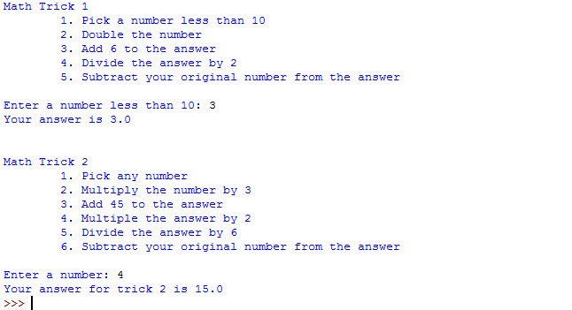
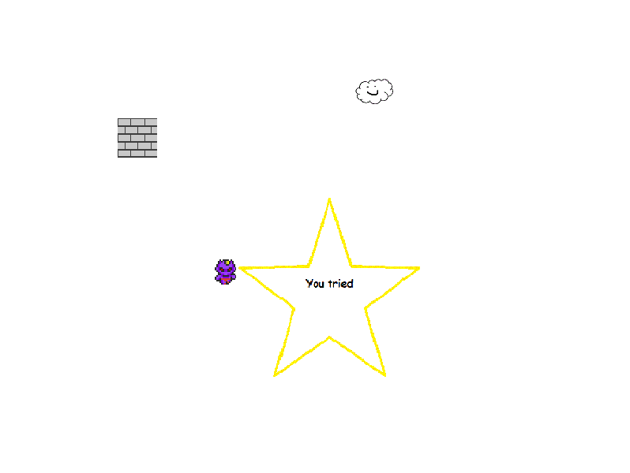
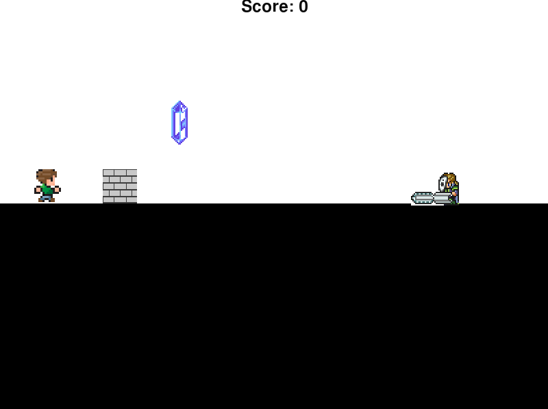
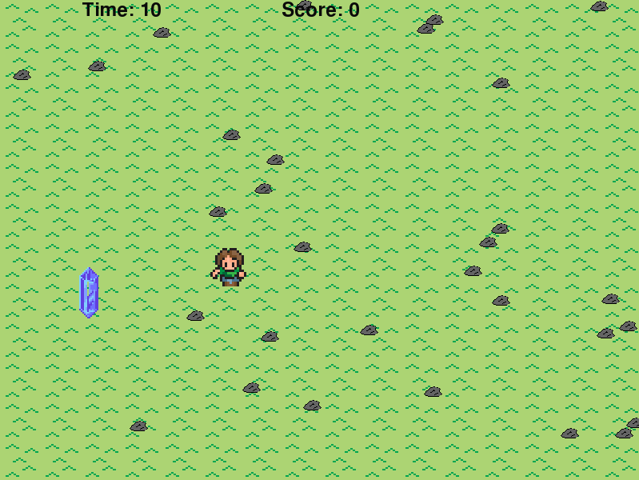
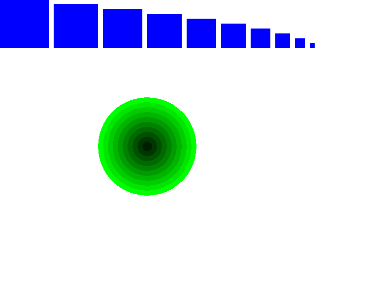
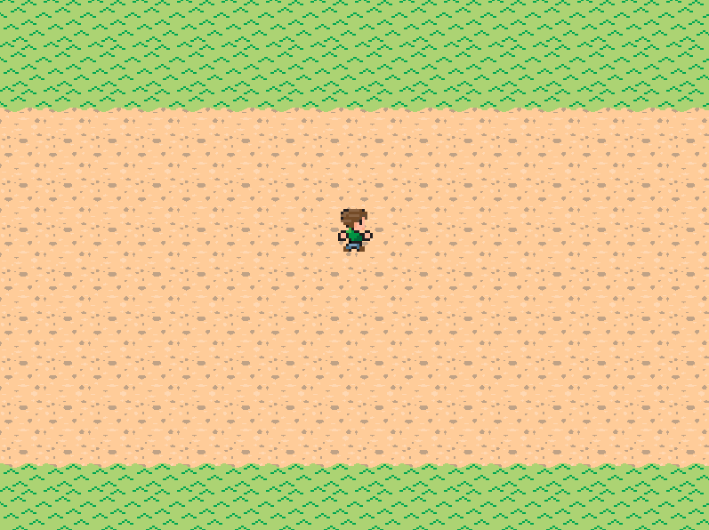
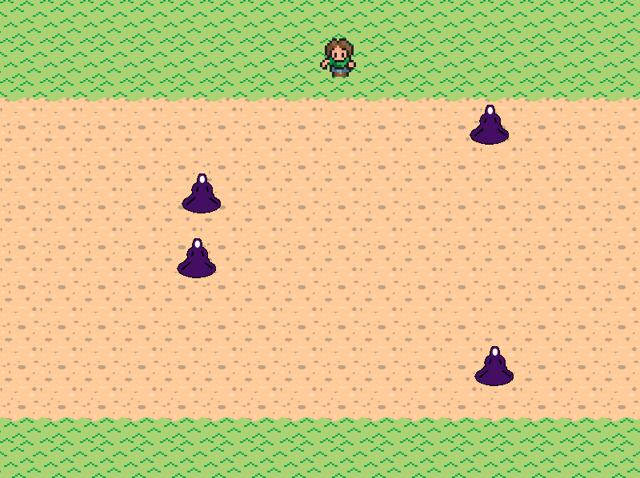
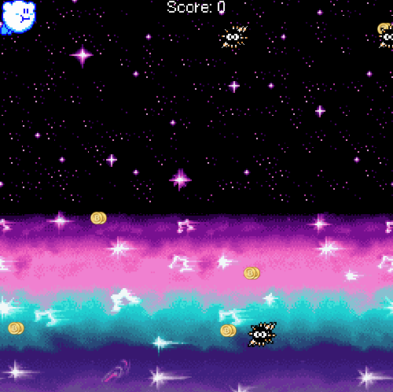

Unit 1

Description:
In Unit 1, we learned the basics of programming in python. We first learned how to print a statement and then we learned how to store different types of things in variables, such as strings and integers. For this lab, we also asked for a user input. Then the user input was used in mathtricks, and the result is converted into a string.
We also worked with pygame and learned how coordinates work in python. We used this information to make the dude.gif in labrunner stay inside the window.
Concepts learned
- print function: converting integers into strings, passing in a variable, concatination
- mathematics in python: adding, subtracting, dividing, multiplying variables
- input: asking for user to enter something
- variable: store something
Unit 2
 
Description:
In Unit 2, we learned how to use if statements. For the wallrunner, I had the sprite check for collisions with other objects. The program also checked which keys were pressed and moved the sprites.
In Linerunner, we made a small running game. The person would keep running until he hits the wall. I also added a crystal and a person with a chainsaw and had the person check for collisions with those two objects as well. If he hits the crystal, then the program would add points to his score, and if he hits the person with a chainsaw, then he would lose points to his score.
Concepts Learned
- if, else, elif statements: check to see if a certain case is true or false
- draw: drawing the objects to the screen
- import: import classes to create an object
Unit 3
 
Description:
In Unit 3, we learned how to use loops to make a program continuously check and run if a statement is true. In groundrunner.py, the code would continue to run while True. In timer.py, the timer would tick down while the time was greater than 0.
Concepts Learned
- while loops: to perform a task while something is true. Unlike if, which only occurs once, it will continue to run unless false.
Unit 4
 
Descriptions:
In Unit 4, we learned to make lists and use for loops. The lists would store multiple items, like costumes/images, and the foreach loop would check each item inside that list starting from 0. In dodgerunner.py, the enemies would disappear when off screen with self.myList.remove(badGuy) and appear again with myList.remove.append(badGuy) when number of bad guys was less than 4.
Concepts Learned:
- for loop: checks each item in a list, and does something for each item.
- list: stores multiple things inside the list. Can add item with listname.append(item) and remove it with listname.remove(item).
Final Pygame Project

Descriptions
For my final python project, I used pygame to create a pygame called "Kirby's Adventure/Kirby Runner." It's an endless running game where the player navigates a kirby sprite through spikes and collects coins.
Concepts Learned:
- lists: to create and move the coins and the enemies.
- making a moving background and changing from title screen to actual game